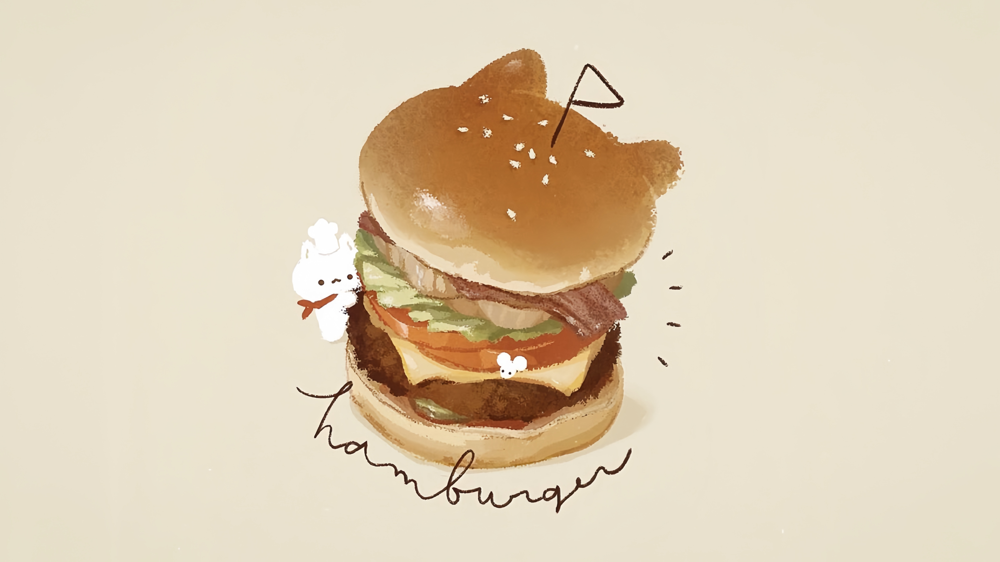

Projects
Introduceren
Hallo! Hartelijk dank voor het komen kijken naar het werk dat ik heb gemaakt. Nu ga ik mijn werk laten zien en ik hoop dat jullie het mooi vinden.

Portefeuille


Hallo! Hartelijk dank voor het komen kijken naar het werk dat ik heb gemaakt. Nu ga ik mijn werk laten zien en ik hoop dat jullie het mooi vinden.